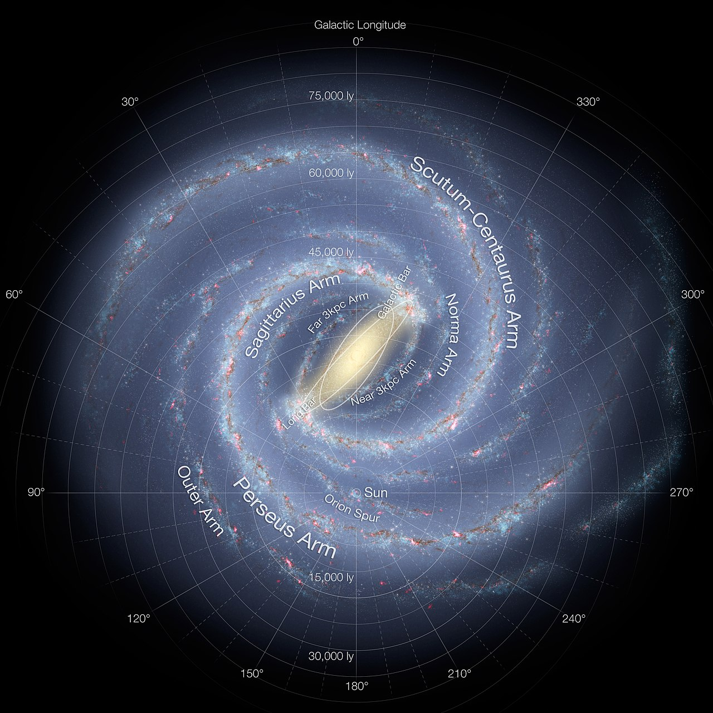
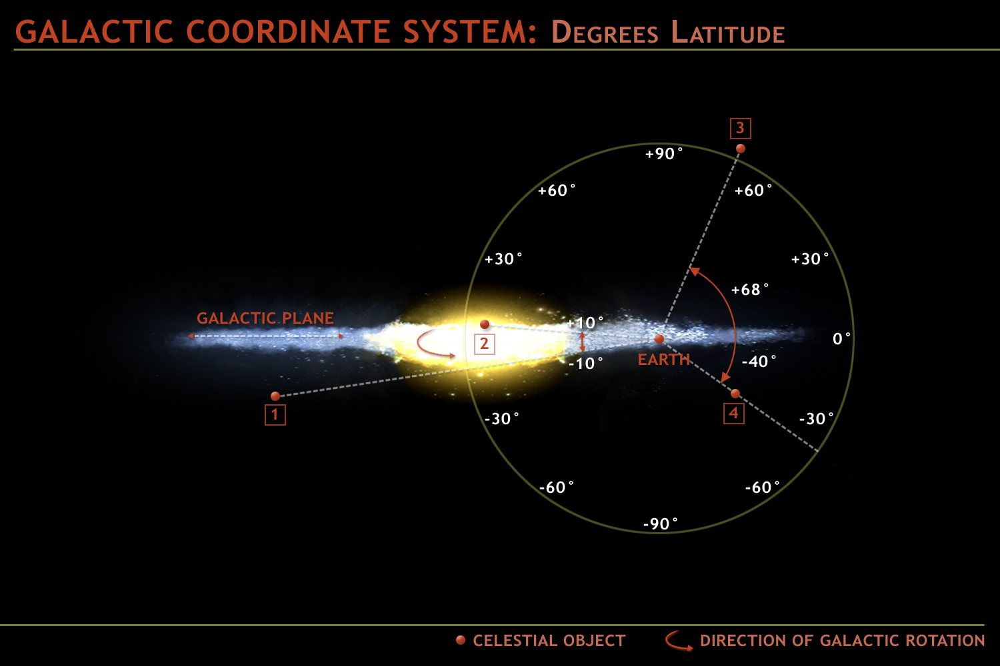
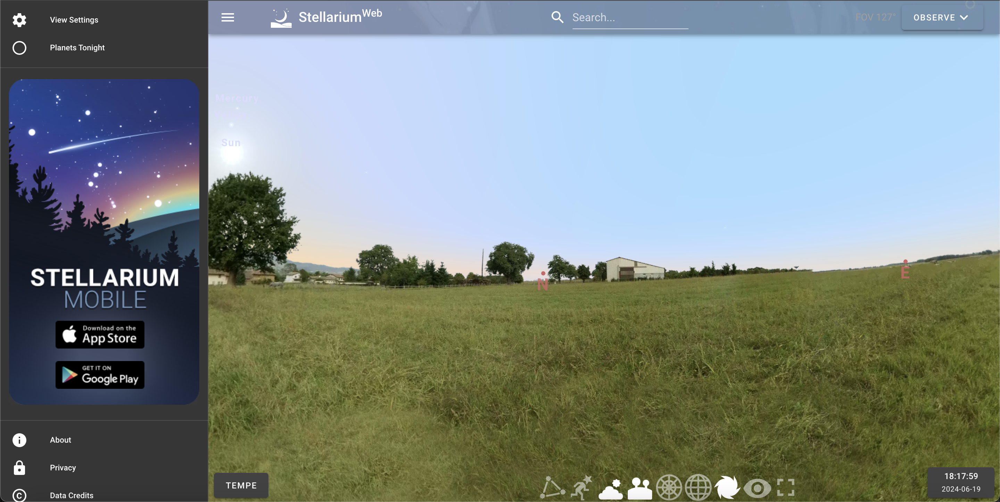
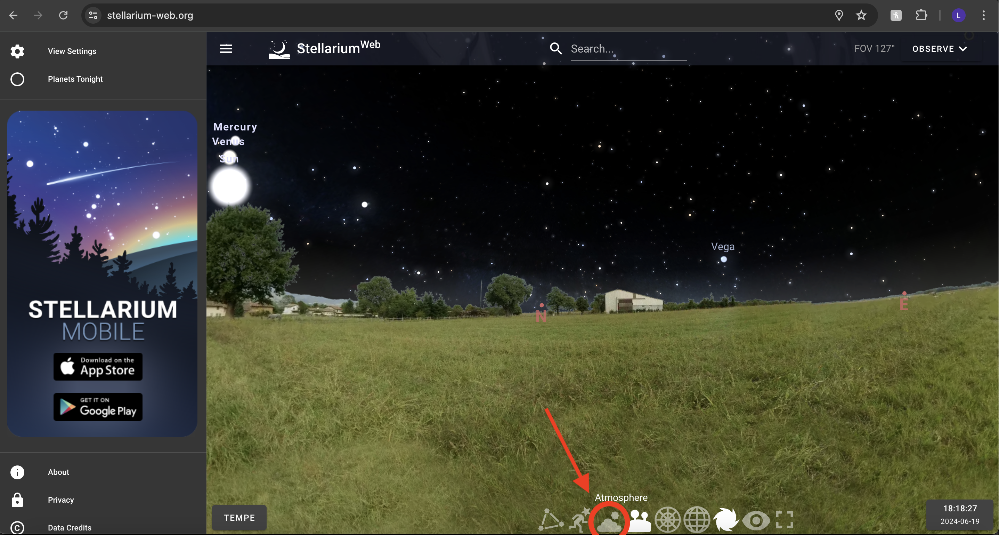
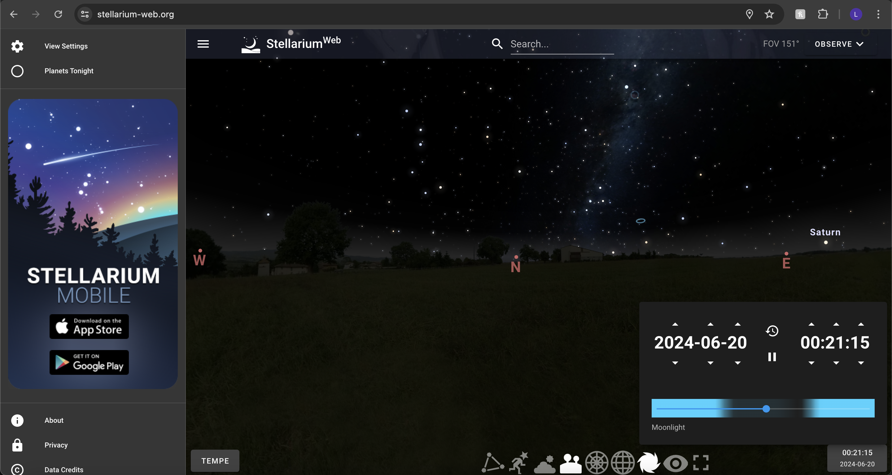
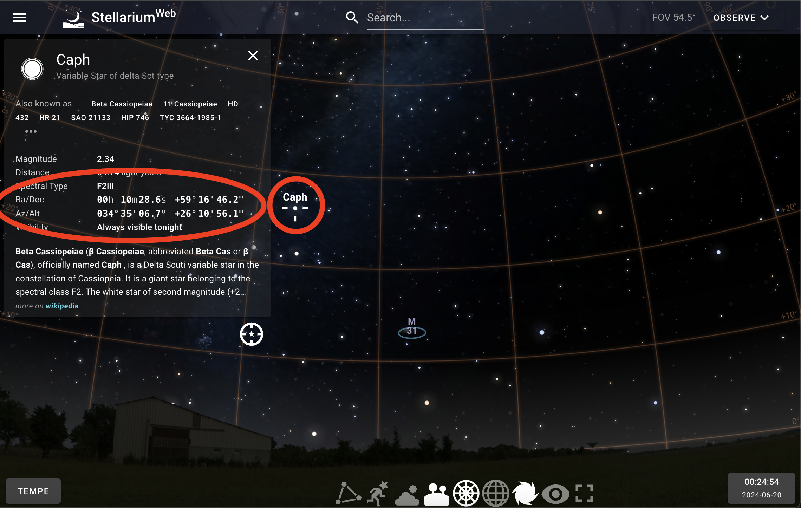
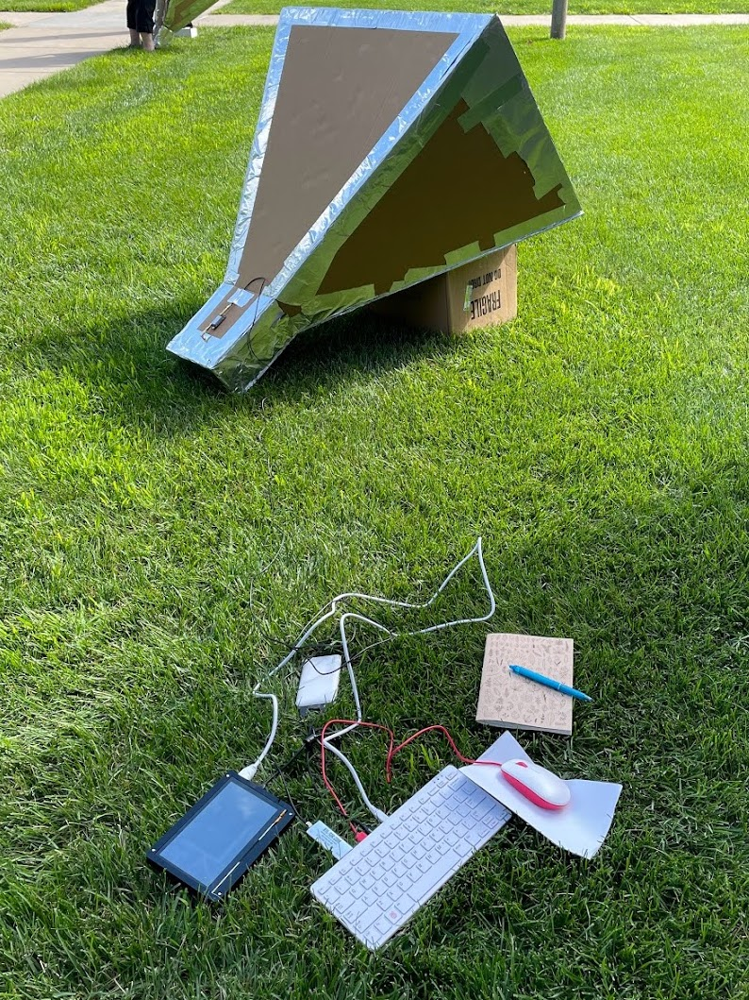

Observing
If you’ve followed the telescope setup tutorial, you will now have a system that is ready to observe. The first step is to make a plan of where to point your CHART horn. You will need to know when the galaxy is visible in your location. Different parts of the Milky Way will be visible from different locations on Earth, depending on the time. The image below shows an artist’s rendition of the Milky Way, as would be viewed from above. The galaxy is divided into units of “Galactic Longutude”, with the center of the coordinate system at the sun. There are four Quadrants of Galactic longitude (I: 0 degrees to 90 degrees, II: 90 degrees to 180 degrees, III: 180 degrees to 270 degrees, IV: 270 degrees to 360 degrees). The II galactic quadrant is mostly only visible from the northern hemisphere, while the IV galactic quadrant is mostly only visible from the southern hemisphere. If you would like to make a rotation curve, only the I and IV quadrants are usable due to the geometry of the method we will use to calculate the rotation curve. This will be explained further in the analysis section. If you are just interested in detecting the 21-cm signal, you can point at any part of the galaxy you like.

Image Credit: NASA/JPL-Caltech/ESO/R. Hurt - http://www.eso.org/public/images/eso1339e/
There is also the consideration of Galactic latitude, or how far out of the disk of the Galaxy you are pointed. It is best to point as close to the plane of the Galaxy as possible, but the hydrogen distribution in the disk extends out to high galactic latitudes, so if you are slighly off you should still be able to see the 21-cm signal. Galactic latitude is demonstrated below:

Image Credit: https://astronomy.ua.edu/undergraduate-program/course-resources-astronomy/lab-exercise-8-cosmic-distributions-and-the-galactic-ecology/1293-2/
To figure out where the galaxy is located at your location and time, we reccomend using something like Stellarium. The Stellarium app or web browser will show what is in the sky at your location. We demostrate here with Stellarium web. Here is a quick view of the interface:

Make sure to change the location to your current location. We reccomend turning off the atmosphere with the button labelled “atmosphere” at the bottom. This will let you see where the Galaxy is during the day time as well as the night time. Fortunately, unlike optical astronomy, we can do radio measurements of the Milky Way during the day!

Using the bottom right button to scan through times, you can see when the Galaxy is visible from your location. It should pass overhead twice in a 24 hour period.

To check what part of the Galaxy you are seeing, you can click on an object within the galactic plane to get the RA and DEC (what we call “Celestial coordinates”, see here or the analysis tutorial for more information and then put it into a converter like this one to get the galactic coordinates. Galactic l is the longitude, galactic b is the latitude. Here, we have clicked the object “Caph” which is within the plane of the Milky Way that we can see.

The other thing to consider is how many measurements to take. We have a resolution on the sky limited by the beam of the telescope, which is 25 degrees. This means that if you point at the galaxy at one set of coordinates, and then move say 10 degrees of galactic longitude later, there will be significant overlap in the gas collected, as there will be a 15 degree swath that is included in both measurements. If you want to scan the whole first quadrant, for example, it is reccomended to do it in steps of no smaller than 15 degrees.
Turn on the azimuthal grid next to the atmosphere button, and look at what Altitude and Azimuths you want to observe. These will guide you when you’re observing outdoors. You can use the same trick of clicking an object to get the exact Alt/Az. When you go out to observe, you can use a phone compass and either a protractor or phone angle meter to figure out where to point the horn. The Azimuth should be findable with your compass, and the Altitude with the angle meter. You may need to bring something to prop your horn up with if you’re holding it at an angle.
Setup
Now, you’re ready to observe outside! The following documents will walk you through setting up your horn outside and taking data.
The CHART Procedure document describes the setup and data taking steps.
The CHART observing sheet provides a handy template for keeping an observing log.
Here is a printable version of the procedure document if you’d like to have one handy.
